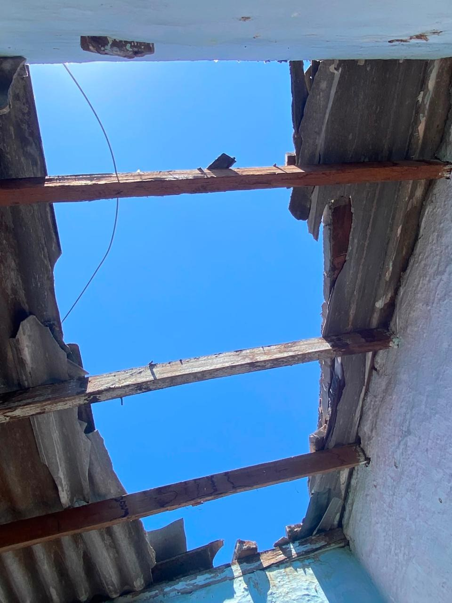
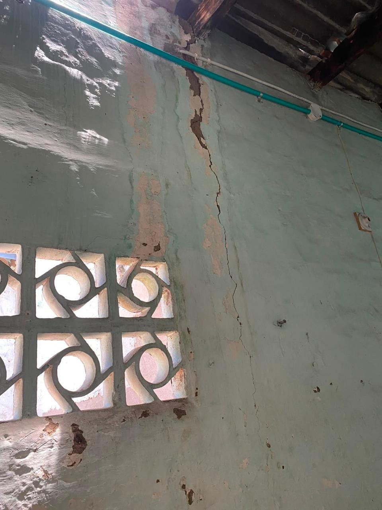
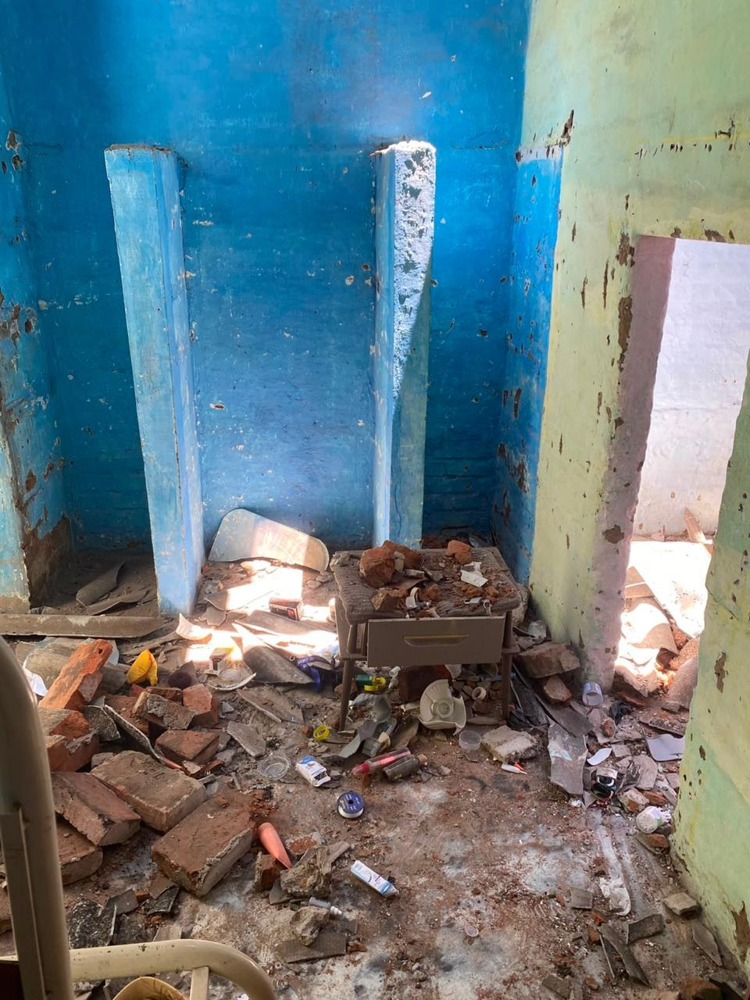
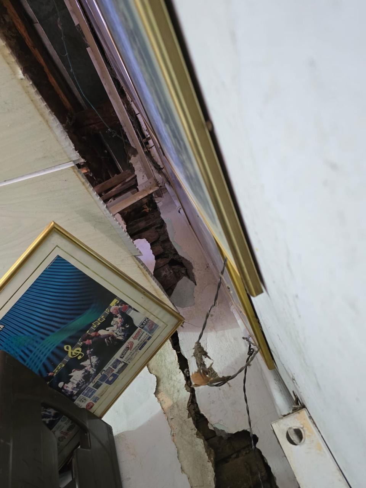
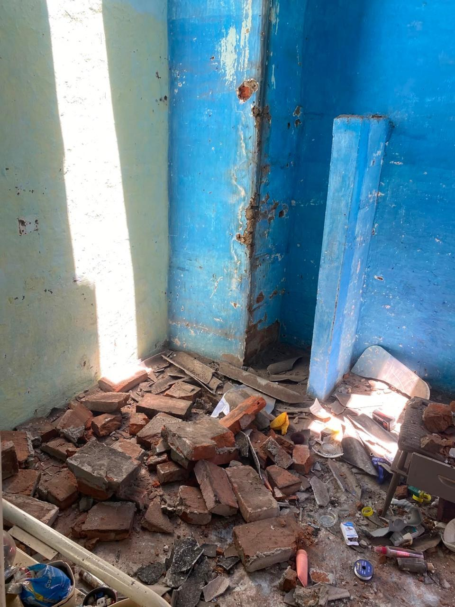
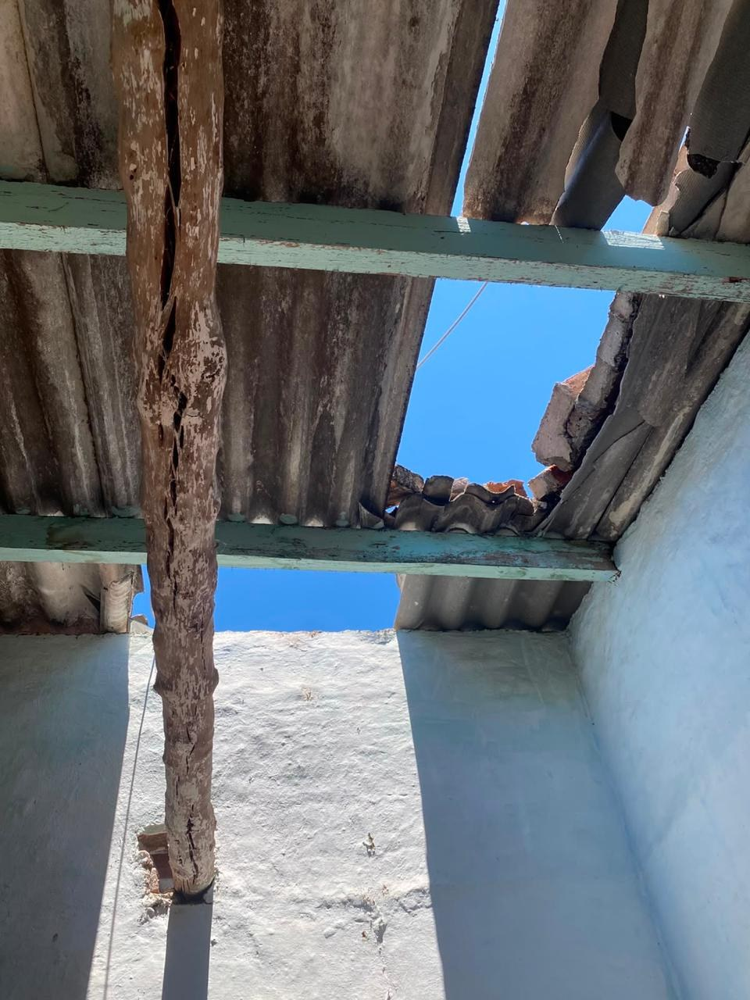

AFECTACIÓN ESTRUCTURALCubiertas abiertas y daños visibles en vivienda
Una portada totalmente reconstruida para que el ciudadano entienda el corte sin ruido visual: qué registra el censo, dónde se concentran las afectaciones, qué falta validar y qué soporta cada cifra publicada.







Las marcas de vivienda son categorías censales operativas y no sustituyen por sí solas un dictamen técnico estructural.
Se reconstruyó la portada, se hizo más visual la base territorial, se reorganizó el universo de verificación, se convirtió metodología en tarjetas interactivas y se ordenó por completo la trazabilidad pública y el panel administrativo.
La lectura ya no depende solo de una tabla extensa. Primero se presenta una vista visual por tarjetas y puntos territoriales; luego, una tabla clara para validación detallada.
| Territorio | Familias | Personas | No hab. | Destr. | Sin estado | Núcleos vacíos | Prioridad |
|---|
“Sin estado” incluye núcleos iniciados sin marca habitacional. Debe analizarse junto con la columna de núcleos vacíos.
Se eliminó el bloque vacío y se sustituyó por una composición con jerarquía visual: total priorizado, desglose, explicación operativa y apoyo gráfico sin personas.
Familias con marca censal no habitable o destruida.
Ver implicaciones de calidad →El universo sirve para priorizar visitas y decisiones de seguridad habitacional.
No sustituye una evaluación estructural profesional ni un acta formal de cierre.
El portal conserva una lectura institucional pero más elegante: gráficas limpias, porcentajes legibles y tarjetas con mayor jerarquía tipográfica.
Se organiza la calidad en una lectura de tablero: completitud medible, hallazgos críticos y tareas concretas de tratamiento.
El bloque se rediseñó como una experiencia de tarjetas: cada idea se consulta por separado, se puede reorganizar y la lectura deja de ser una columna larga y pesada.
Se eliminó la composición vacía y se reemplazó por una línea de tiempo con tarjetas claras, notas de cambio, estados visibles y una guía corta para entender el flujo de publicación.
Se conservó la lógica documental del portal, pero con tarjetas más limpias para informes, infografías, registros fotográficos y control documental.
La información se soporta en el consolidado técnico del RUFE elaborado por la Alcaldía Municipal de San Pedro para la emergencia sísmica del 10 de agosto de 2026.
El consolidado resume el avance del diligenciamiento del formato RUFE y del censo adelantado por el municipio con ocasión del sismo y sus afectaciones habitacionales.
El portal expone resultados agregados, no datos personales. Sirve para lectura técnica pública, priorización y trazabilidad de cortes.
Transcribió Juan Carlos Ossa Ramírez, revisó Laura Cristina González Calero y aprobó Diego Fernando Mendoza, según el consolidado técnico suministrado.
El panel se reorganiza en pestañas más limpias y con mayor tamaño tipográfico para facilitar operación, revisión y publicación del corte.
Espacio para gestionar contenidos, territorios, bitácora, soportes y flujo de publicación.
Priorización por no habitable + destruida.
Preparar cambios y anexos.
Verificar cifras, soportes y narrativa pública.
Emitir versión, fecha y nota de cambio verificable.